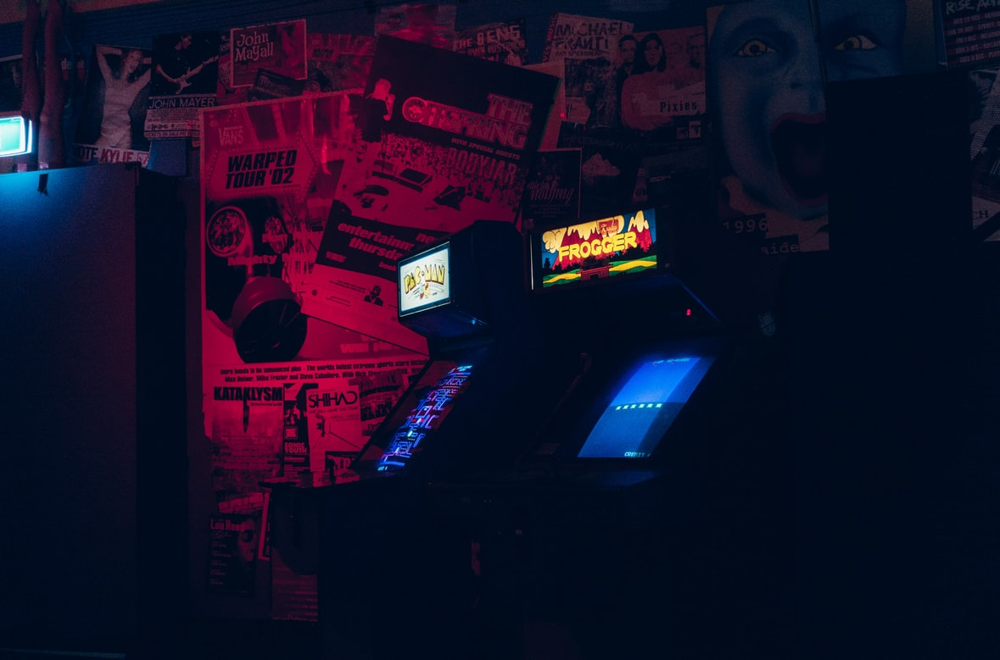

Unity Jojo's Bizzare Adventure Fighting Game
This is my best project listed on the page. My biggest dream as a kid was to create a video-game and I got the chance to do that when I joined PTEC. I spent over 100 hours of coding and editing the game because I wanted to recreate the arcade game on my laptop. I learnt that patience does bring the best outcome because I encountered many setbacks and difficulties when coding the game, but my perseverance helped me make the game and learn how to deal with a problem on my own. I am very proud of this project because I did something I wouldn't expect myself to do and did something that I loved as a school project.